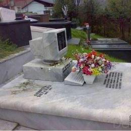

Nguyễn Văn Thuyết
Minh Khai, Bắc Từ Liêm, Hà Nội
25-12-1995
Inspect me! =))
Đại học Công nghiệp Hà nội (09/2013 - 05/2017)
Chuyên ngành: Kỹ thuật phần mềm
Tốt nghiệp loại Trung bình, điểm trung bình 2.44/4
Công ty NTQ Solution JSC (05/2017 - Hiện tại)
Vị trị: Junior PHP Developer
Công ty cổ phần Phần mềm FPT Software (11/2016 - 01/2017)
Vị trị: Thực tập Front-end
- Trong năm tới muốn đạt tới vị trí PHP Middle developer. Sử dụng kỹ năng và kiến thức đã tích lũy để giúp dự án thành công, khách hàng hài lòng với sản phẩm. Chia sẻ kinh nghiệm làm việc, công nghệ mới với các đồng nghiệp khác. Giúp công ty có những án hoàn thành tốt cả về tính năng lẫn chất lượng sản phẩm, chất lượng code.
- Trở thành PHP Senior Developer trong 2 năm tới. Hiểu sâu và rộng nhiều công nghệ, quy trình, biết cách đưa ra design, solution cho dự án. Giúp đỡ junior dev, middle dev.
Các dự án đã thực hiện
| Mô tả | - Thực hiện quản lý nhu cầu giảm cân của người sử dụng App (mobile) thông qua website. |
|---|---|
| Số lượng thành viên | - 3 người |
| Vị trí công việc | - Developer, reporter |
| Vai trò trong dự án | - Phát triển các chức năng - Report - Sửa lỗi |
| Công nghệ sử dụng | - Laravel, VueJS, SASS, Bootstrap, HTML/CSS, Javascript, API - Tools: PHPStorm, redmine, npm/yarn, git. |
| Mô tả | - Dựa trên ứng dụng live chat đã có để xây dựng một ứng dụng tương tự với nghiệp vụ được thay đổi để phù hợp với đối tượng người dùng khác |
|---|---|
| Số lượng thành viên | - 5 người |
| Vị trí công việc | - Developer, reporter |
| Vai trò trong dự án | - Phát triển các chức năng - Report - Sửa lỗi |
| Công nghệ sử dụng | - Laravel, VueJS, SASS, Bootstrap, HTML/CSS, Javascript, API - Tools: PHPStorm, redmine, npm/yarn, git. |
| Mô tả | - Website thu thập ý kiến về các thông tin của nguyên liệu chế biến món ăn, cách thức chế biến |
|---|---|
| Số lượng thành viên | - 3 người |
| Vị trí công việc | - Developer, reporter |
| Vai trò trong dự án | - Phát triển các chức năng, review code - Setup server - Sửa lỗi |
| Công nghệ sử dụng | - Laravel, VueJS, SASS, Bootstrap, HTML/CSS, Javascript, API - Tools: PHPStorm, redmine, npm/yarn, git. |
| Mô tả | - Xây dựng lại hệ thống website nhắn tin hẹn hò sử dụng Laravel. |
|---|---|
| Số lượng thành viên | - 10 người |
| Vị trí công việc | - Developer, reporter |
| Vai trò trong dự án | - Phát triển các chức năng - Sửa lỗi |
| Công nghệ sử dụng | - Laravel, HTML/CSS, Javascript, JQuery - Tools: PHPStorm, redmine, git. |
| Mô tả | - Xây dựng ứng dụng web chia sẻ nội dung, các topic học tập trong nội bộ công ty |
|---|---|
| Số lượng thành viên | - 3 người |
| Vị trí công việc | - Developer, reporter |
| Vai trò trong dự án | - Phát triển các chức năng - Sửa lỗi |
| Công nghệ sử dụng | - VueJS, Vue-element, Parse Server - Tools: PHPStorm, redmine, npm/yarn, git. |
Bài viết